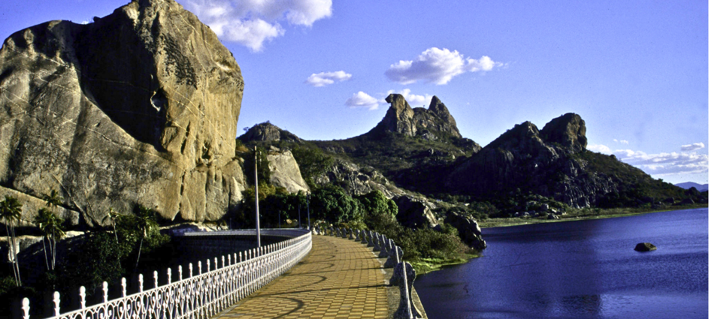
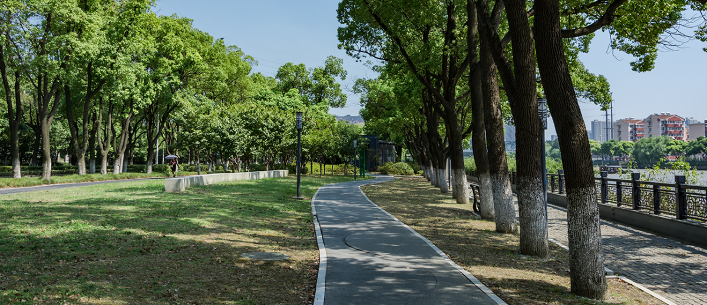
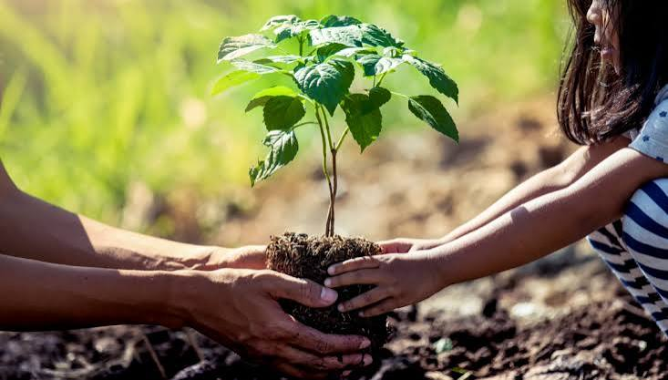

Eventos

Caminhada até o Cedro para boas vivências com a natureza
Venha respirar ar puro, se conectar com a biodiversidade local e contemplar um verdadeiro patrimônio nacional! Nossa caminhada ecológica até o imponente Açude do Cedro propõe uma imersão na história e na arquitetura do século XIX. Vamos apreciar de perto a engenharia desse monumento histórico esculpido entre os monólitos, compreendendo sua relevância cultural para Quixadá e debatendo a importância da preservação das nossas riquezas ambientais e históricas.

Conversa sobre como cuidar das árvores de seu bairro
Venha discutir estratégias para o cuidado e manutenção das árvores em nossa comunidade! Esta conversa visa promover a conscientização sobre a importância das árvores na vida urbana, compartilhando conhecimentos sobre técnicas de plantio, poda e proteção contra pragas e doenças.
Encontro para observar o pôr do sol em um ambiente com árvores
O pôr do sol de Quixadá visto de um jeito special. Convidamos toda a comunidade para uma tarde de contemplação na Lagoa dos Monólitos. Em meio à sombra das árvores, teremos um momento leve com dinâmicas de conexão com a terra, reflexões sobre o impacto do verde na nossa saúde mental e, claro, o espetáculo do entardecer.

Campanha de plantação de novas mudas de árvores no centro de Quixadá
Junte-se a nós nesta grande ação coletiva de plantio na Praça do Leão. Vamos arborizar o centro urbano com mudas nativas, garantindo mais sombra, conforto térmico e vida para o nosso dia a dia. Traga sua disposição e ajude a plantar o futuro de Quixadá!